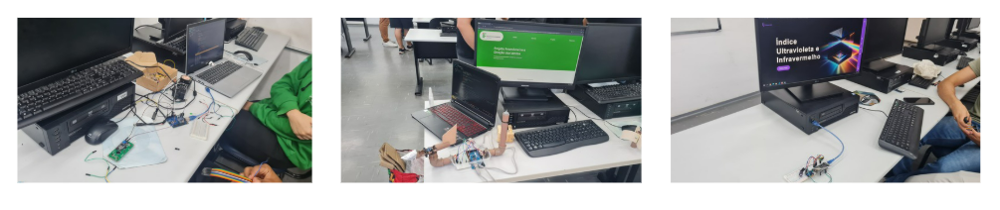

Licenciatura em Matemática

| Cursos - Instituto Federal de São Paulo - Campus Guarulhos | |||
|---|---|---|---|
| Ensino Superior | |||
| Nome do curso | Modalidade | Carga Horária | Turno |
| Licenciatura em Matemática | Presencial | 3.360 horas | Matutino/Noturno |
| Tecnologia em Análise e Desenvolvimento de Sistemas | Presencial com carga horária a distância | 2.040 horas | Noturno |
| Tecnologia em Automação Industrial | Presencial | 2.400 horas | Noturno |
| Bacharelado em Engenharia de Computação | Presencial | 3.600 horas | Vespertino |
| Bacharelado em Engenharia de Controle e Automação | Presencial | 3.600 horas | Noturno |
| Ensino Técnico | |||
| Técnico em Automação Industrial | Presencial + Educação à Distância | 1.200 horas | Noturno |
| Técnico em Desenvolvimento de Sistemas | Educação à Distância | 1.000 horas | Noturno |
| Técnico em Sistemas de Energia Renovável | Presencial | 1.200 horas | Vespertino |
| Integrado ao Ensino Médio | |||
| Técnico em Informática | Presencial | 3.600 horas | Vespertino |
| Técnico em Mecatrônica | Presencial | 3.600 horas | Matutino |
| Pós-graduação | |||
| Computação Aplicada | Educação à Distância | 140 horas | --- |
| Tecnologias Aplicadas à Educação | Educação a Distância | 360 horas | --- |

.png)



Não há imagem disponível para este curso.
Não há imagem disponível para este curso.